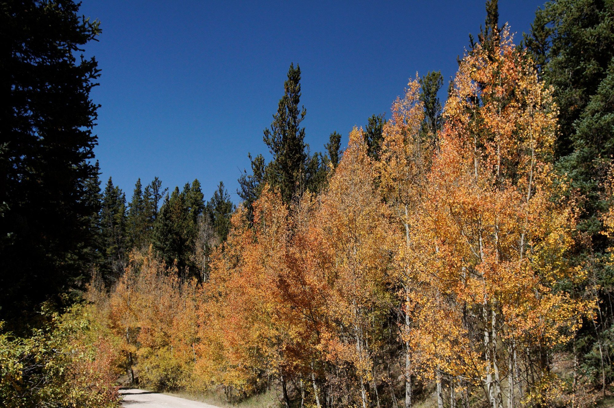
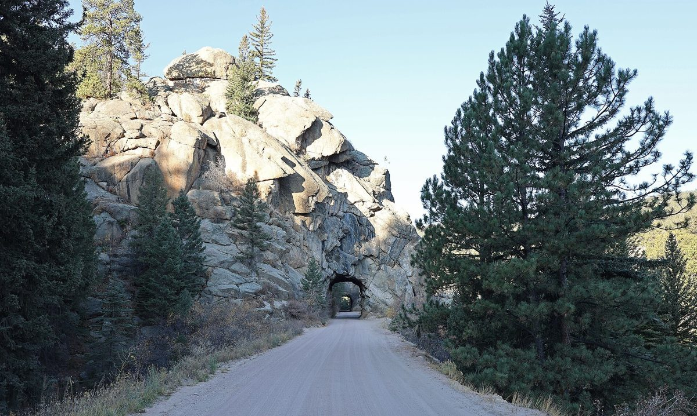
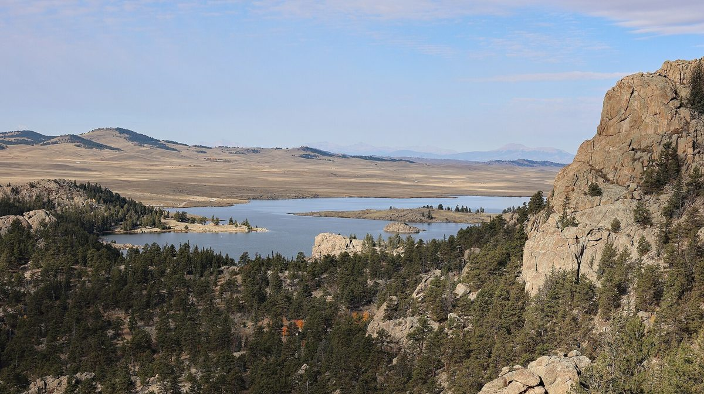
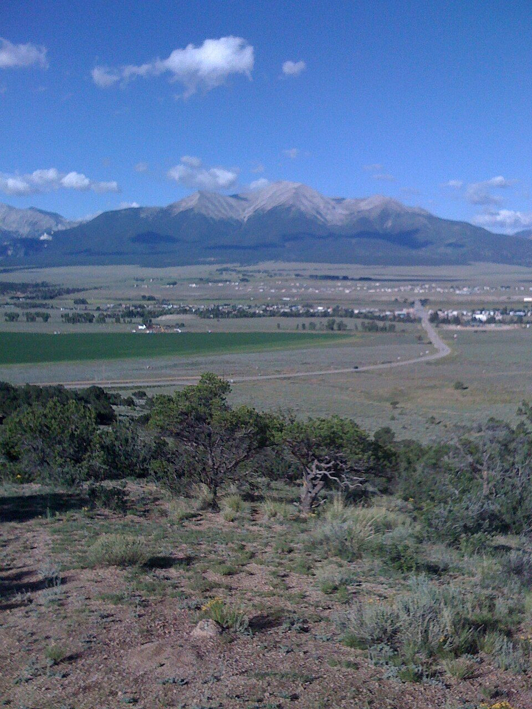
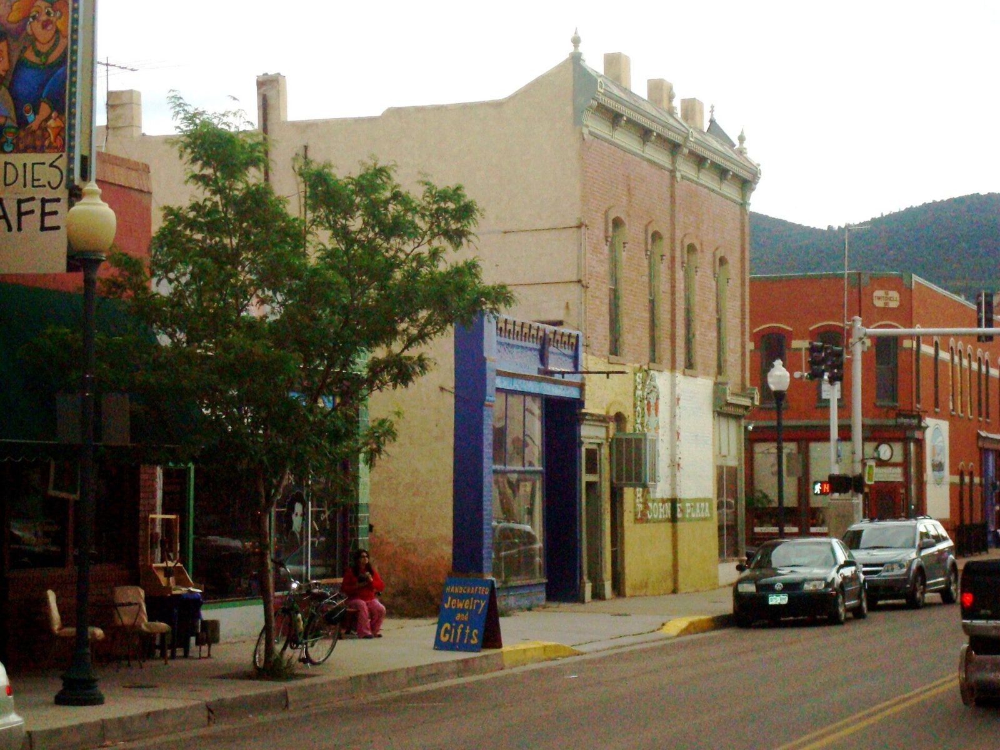
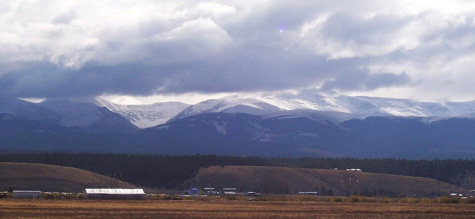
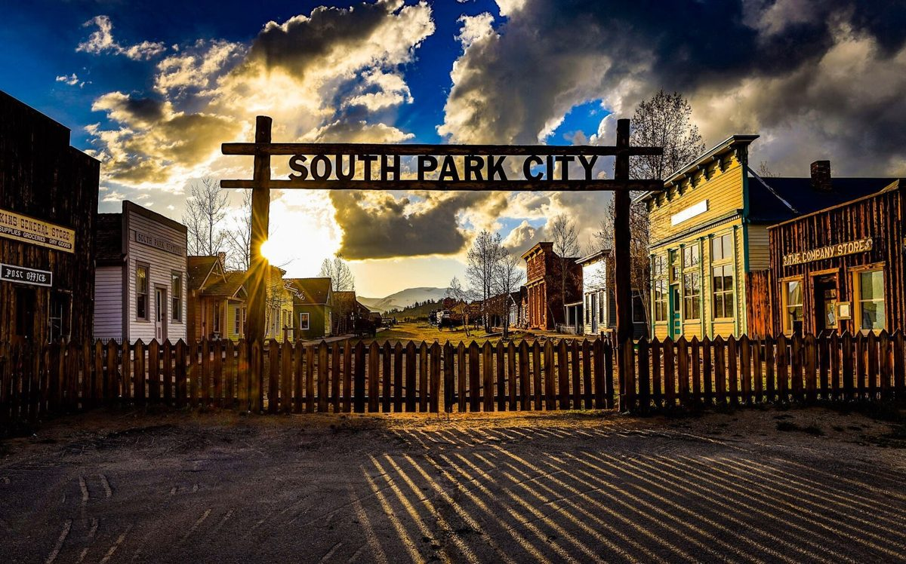
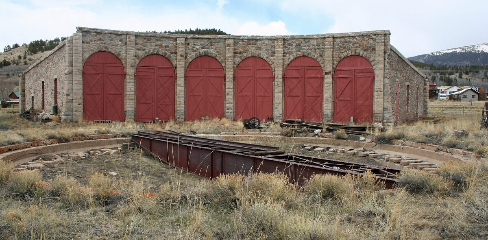
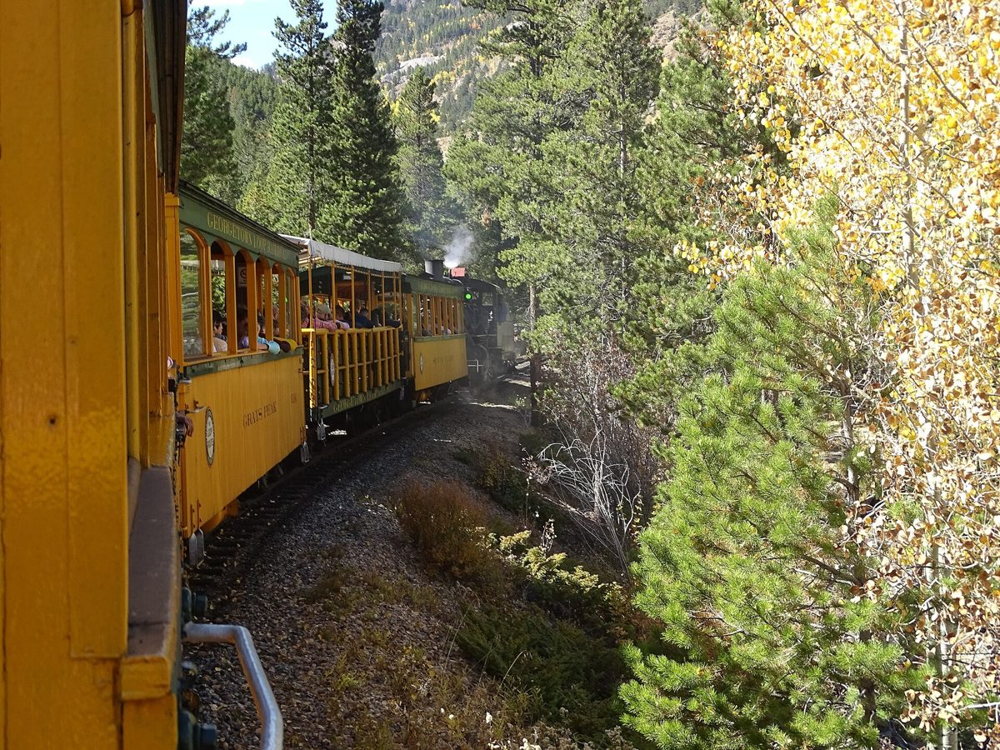
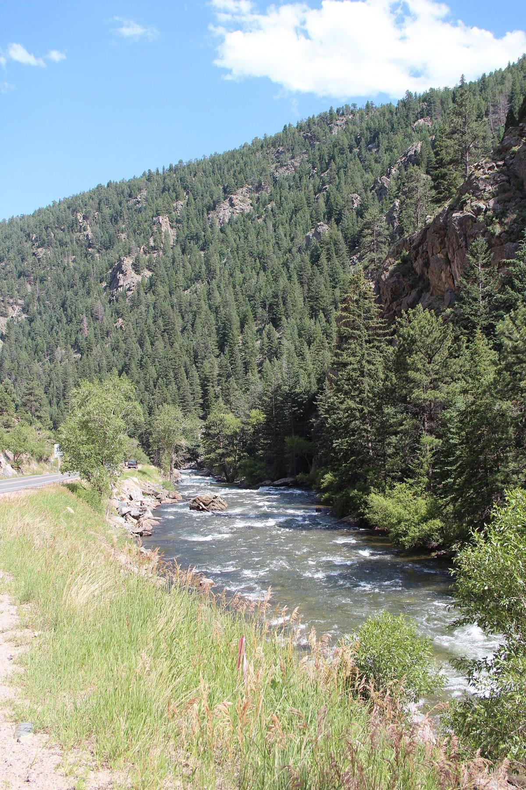

⛰Magnolia Road
Off Boulder Canyon and straight up onto a dirt shelf road. It tops out on a high plateau of ranches and ponderosa pines with the Indian Peaks lined up to the west.

2 days · 1 night · from Boulder
Gold-rush back roads to a river town with hot springs, then three high passes home.
Why ride it
Half of day one is dirt: Magnolia Road, the Oh My God Road, the South Platte's river canyon and the empty Thirtynine Mile country, ending on the old Ute Trail into Salida. Evening is a river town with brewpubs and the biggest hot springs pool around. Day two you choose over breakfast: the long fun way over Weston, Boreas and Loveland passes, or the quick way home by mid-afternoon. Both have lunch in Breckenridge.
The whole trip
Scroll or pinch to zoom; roads and their names appear as you zoom in. Day 1 in orange, day 2 in raspberry, the quick way home in grey. Maps: © OpenStreetMap contributors, SRTM | style © OpenTopoMap (CC-BY-SA); relief and rivers: USGS The National Map.
Day 1
200 mi · about 6 h of riding · half of it dirt
 🔍 Explore day 1 up close
🔍 Explore day 1 up close
The big day: up into the old mining hills, down the South Platte, and across the high, empty ranch country to the Arkansas valley.
Boulder to Idaho Springs · 39 mi
Off Boulder Canyon and straight up onto a dirt shelf road. It tops out on a high plateau of ranches and ponderosa pines with the Indian Peaks lined up to the west.

Miners called this gulch the richest square mile on earth. Red-brick streets, mine dumps on every hillside, and an 1878 opera house that still puts on shows.

A near-empty gold camp up the gulch: false fronts, mine dumps, and a Masonic lodge that still meets in its own ghost town.
Locals named it well. A narrow dirt shelf road snakes over the ridge from Central City and drops into Idaho Springs past old mine workings, with long views the whole way down.

Coffee on Miner Street among the old storefronts. Indian Hot Springs, a few blocks along, has steamy cave baths cut into the hillside. Save that thought for the ride home.
Idaho Springs to Lake George · 90 mi
Past Evergreen Lake and onto quiet back roads through the pines.
Foxton Road and the South Platte River Road follow the water down a deep granite canyon. Easy riverside dirt, fly fishers knee-deep in Gold Medal trout water, and the little store at Deckers.
A quiet, sandy forest road through pink granite and pines to Lake George.
A tiny mountain hamlet on US 24, and lunch.

Gravel along the river through rock tunnels left by the old Colorado Midland Railway. Ride in, turn around whenever you like.
Giant petrified redwood stumps, 34 million years old, in a high meadow. A national monument with an easy loop walk.
Lake George to Salida · 70 mi

The reservoir comes into view below as the road climbs out of the pines into open high country.
Big, empty country: old volcanic hills, cattle, pronghorn, and dirt roads that go on for miles without another vehicle. A few miles of rough forest road near the end of this stretch; skip it after heavy rain.

The finale follows an old Ute route off the high country to the Arkansas River, with the Sawatch Range's fourteeners filling the windshield.

Tonight
One of Colorado's biggest historic downtowns, all brick, right on the Arkansas River. Patios and brewpubs on F Street, a riverside walk where rafters and surfers play in the town's whitewater park, and a soak at the Salida Hot Springs Aquatic Center, one of the country's biggest indoor hot springs pools.
Day 2
211 mi · about 4¾ h · a quarter dirt
Salida to Fairplay · 90 mi (the fun way)
Creekside hot pools under the white Chalk Cliffs. Probably too early for a soak, but it's a fine place for breakfast.

A river town with the Collegiate Peaks, a wall of 14,000-ft mountains, right behind it. Good for a second coffee.

North of town the route leaves the highway for a gravel railroad bed above the river, through rock tunnels blasted for the trains.

A wagon road from 1860 that boomed with the Leadville silver rush, now a quiet dirt pass through aspens and pines. The top is 11,921 ft, and the ride down follows the South Platte's South Fork into South Park.

About 40 old buildings rescued from the mining camps around South Park and set up as an 1880s town you can walk through: saloon, assay office, general store.
Fairplay to Breckenridge · 32 mi

A stone roundhouse from 1881, built for the narrow-gauge trains that climbed Boreas Pass. The quiet little town is where the pass begins.

You ride the old railroad bed itself: gentle grades, sweeping curves and a summit at 11,481 ft with the old section house. Then a long, scenic glide down to Breckenridge with the Tenmile Range ahead.
An old wooden water tank that once filled the steam engines on the climb, still standing beside the road down to Breckenridge.

Lunch on the Victorian Main Street, about halfway home.
Breckenridge to Boulder · 89 mi
A short walk through the pines to a railing above Dillon Reservoir, with the Tenmile and Gore ranges across the water.

The Continental Divide at 11,990 ft. Big switchbacks both ways, and the classic photo with the sign.

A steam train spirals between Silver Plume and Georgetown over a high iron bridge. Georgetown's Victorian streets are just off the road.
The last stop, if you want one: a coffee or a mountain pie on Miner Street, or the cave baths at Indian Hot Springs.

Down the canyon through its rock tunnels to Golden, and home to Boulder.